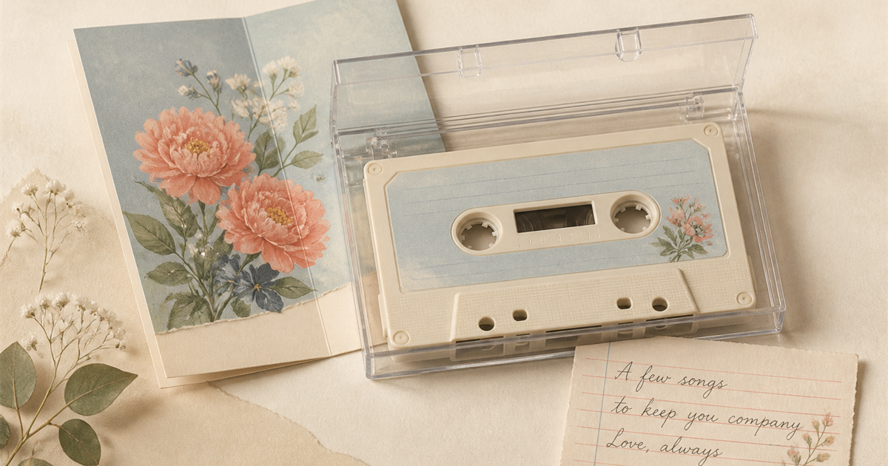

Create a Custom Mixtape
Make a personal music gift with a retro cassette design, up to four songs, a short note, and a shareable link.

A small birthday gift for Emma
To: Emma
From: Alex
Occasion: Birthday
Note: For every tiny reason you make life brighter. Happy birthday!
- Happy Birthday
- Happy Phone
- Contigo Es Diferente
- Three Kisses
What Can You Personalize?
These are the details that make the gift yours. The current tool does not upload personal photos, import Spotify playlists or add arbitrary songs from another service.
For a Partner
Choose the Love & anniversary direction, pick songs connected to a shared memory, and use a soft cassette background. Try To: Jamie, From: Morgan and a note such as “Four little songs for our favorite memories together.”
For a Best Friend
Look for songs that sound like your shared jokes, long conversations or favorite ordinary days. Use the For a friend scene as a starting point. A note could be “For every version of us, and every story still waiting to happen.”
For a Birthday
Start with Birthday, add a bright backdrop and choose a song such as Happy Birthday before filling the rest of the sequence with songs that describe the person.
For Someone Who Needs Comfort
Choose A little comfort and keep the note gentle. The gift does not need to solve anything; it can simply say that someone is thinking of them.
As a Thank-you Gift
Thank-you is a flexible theme even when it does not have its own filter. Choose songs that remind you of what this person has done, then write one specific line instead of a general compliment.
How to Make It Personal
- Choose a look. Match the backdrop to the person's energy or the occasion.
- Pick songs with a reason. Keep the sequence short and intentional.
- Add the recipient and sender. Use the To and From fields to give the card context.
- Write a short note and share the link. Keep it specific, then let the recipient open it when ready.
Custom Mixtape FAQ
Is a custom mixtape a good gift?
It is a good fit when you want to give someone a small, personal sequence rather than a generic playlist.
Can I make one for free?
Yes. You can create and share a personal mixtape at no cost.
Can I add the recipient's name?
Yes. The To field supports up to 40 characters.
How long can the note be?
The personal note supports up to 140 characters.
Does the recipient need an account?
No. The recipient can open the share link in a browser without registering.
Can I make a matching J-card?
Yes. Use the custom J card tool to create a printable cassette insert.